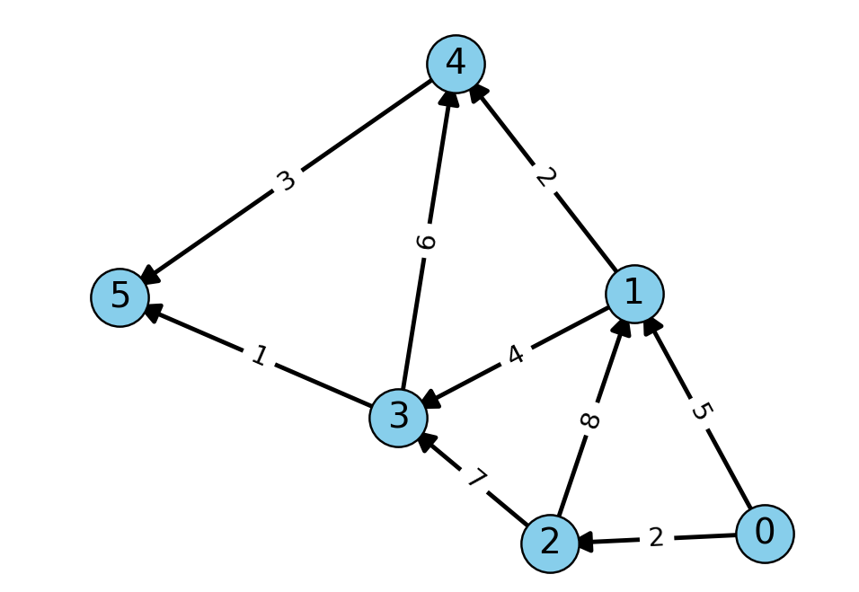

Dijkstra算法
最近在学习车辆调度问题，精确算法求解该问题时会涉及到求最短路径，所以先复习一下图中的最短路径算法——迪杰斯特拉算法。
迪杰斯特拉算法的全称是Dijkstra算法，由荷兰计算机科学家艾兹赫尔·迪杰斯特拉（Edsger W. Dijkstra）于1959年提出。这是一种用于解决带权图中单源最短路径问题的经典算法，适用于所有边权为非负值的图。也就是说在给定的一张图中，一个顶点到另一个顶点的路径可能有多条，最短路径指的就是顶点之间“最短”的路径。
算法步骤
迪杰斯特拉算法的原理是：从源点出发，依次选择距离源点最短的顶点，然后更新该顶点到其他顶点的距离。
- 创建一个距离数组
dist[]，对于每个顶点v，初始化dist[v]为无穷大，但起始顶点s的距离为0 - 创建一个集合S，用于存储已找到最短路径的顶点，初始为空
- 循环重复以下步骤，直到所有顶点都被加入集合S：
- 选择不在S中且距离值最小的顶点u
- 将顶点u加入集合S
- 更新顶点u的相邻顶点v的距离值：如果
dist[u] + w(u,v)小于dist[v]，则更新dist[v]为dist[u] + w(u,v)
- 当循环结束时，
dist[]数组包含了从起始顶点s到所有其他顶点的最短距离
时间复杂度分析
算法包括了两部分：找最小距离顶点以及松弛边的操作。现在我们把两部分加起来：
（1）找最小距离顶点的操作
每轮都要扫描全部个顶点来找最小值。
总共进行轮（每个顶点恰好被选中一次）。
所以这部分总时间 =
（2）松弛边的操作
对每个顶点 u，我们遍历它的所有邻接边。
所有顶点的邻接边总数 =（无向图）或（有向图）→ 统一视为
所以松弛总时间 =
合并两部分：
总时间复杂度 =
但在最坏情况下（比如完全图），边数，所以
更重要的是：即使图很稀疏（比如），找最小值的操作仍然是，这部分占主导！
因此，朴素 Dijkstra 的时间复杂度被写作，因为它由“找最小值”这一步决定，与边数关系不大。
举个例子
假设图有个顶点：
第1轮：扫描5个点找最小 → 4次比较
第2轮：扫描剩下4个未访问点 → 3次
…
第5轮：扫描1个点 → 0次
总比较次数 =
这就是的来源！
优化版本
如果用最小堆（优先队列）来维护未访问节点的距离，那么：
取最小值：
插入/更新：每次，最多次
总时间变成，在稀疏图（）中远优于。
总结
朴素 Dijkstra 是，因为每一步都要线性扫描所有顶点来找到当前距离最小的未访问节点，共做次，总计。
最短路示例
以共有6个顶点(0-5)的带权有向图为例, 如下图所示

我们从顶点0开始，找到到其他所有顶点的最短路径。
初始化
- 距离数组
dist[]：[0,,,,] - 集合S：{}
第1步
- 选择不在S中且距离值最短的顶点u，即顶点0，距离为0
- 将顶点0加入集合S，即S = {0}
- 更新顶点0的相邻顶点{1， 2}的距离值
- 顶点1：dist[1] =
- 顶点2：dist[2] =
- 距离数组更新为：[0, 5, 2,,]
第2步
- 选择不在S中且距离值最短的顶点u，即顶点2，距离为2
- 将顶点2加入集合S，即S = {0, 2}
- 更新顶点2的相邻顶点{1, 3}的距离值
- 顶点1：dist[1] =(无变化)
- 顶点3：dist[3] =
- 距离数组更新为：[0, 5, 2, 9,]
第3步
- 选择不在S中且距离值最短的顶点u，即顶点1，距离为5
- 将顶点1加入集合S，即S = {0, 2, 1}
- 更新顶点1的相邻顶点{3, 4}的距离值
- 顶点3：dist[3] =（无变化）
- 顶点4：dist[4] =
- 距离数组更新为：[0, 5, 2, 9, 7,]
第4步
- 选择不在S中且距离值最短的顶点u，即顶点4，距离为7
- 将顶点4加入集合S，即S = {0, 2, 1, 4}
- 更新顶点4的相邻顶点{5}的距离值
- 顶点5：dist[5] =
- 距离数组更新为：[0, 5, 2, 9, 7, 10]
第5步
- 选择不在S中且距离值最短的顶点u，即顶点3，距离为9
- 将顶点3加入集合S，即S = {0, 2, 1, 4, 3}
- 更新顶点3的相邻顶点{4, 5}的距离值
- 顶点4：dist[4] = （无变化）
- 顶点5：dist[5] =（无变化）
- 距离数组更新为：[0, 5, 2, 9, 7, 10]
第6步
- 选择不在S中且距离值最短的顶点u，即顶点5，距离为10
- 将顶点5加入集合S，即S = {0, 2, 1, 4, 3, 5}
- 顶点5没有邻接顶点，或所有邻接顶点都已在S中
- 距离数组更新为：[0, 5, 2, 9, 7, 10]
算法结束
- 最终的距离数组为：[0, 5, 2, 9, 7, 10]
- 从顶点0到顶点1、2、3、4、5的最短距离分别为5、2、9、7、10
核心特性
- 贪心策略：每次都选择当前距离最小的顶点进行处理
- 单源最短路径：找出从一个源顶点到所有其他顶点的最短路径
- 正权图：要求所有边的权重为非负值
- 时间复杂度：使用二叉堆的优先队列实现为，其中为边数，为顶点数
- 空间复杂度：，主要用于存储距离数组和已访问集合
python实现
1 | import heapq |
优缺点
优点
- 最优解：保证找到最短路径（在没有负权边的情况下）
- 适用性广：可以解决许多现实世界的最短路径问题
- 效率高：使用优先队列优化后，算法效率较高
- 易于理解和实现：算法思想直观，实现相对简单
缺点
- 不适用于负权边：不能处理带有负权边的图
- 不能检测负权环：在有负权环的图中可能无法正常工作
- 空间消耗：需要存储距离数组和优先队列，空间复杂度较高
- 效率受限于优先队列实现：不同的优先队列实现会影响算法效率